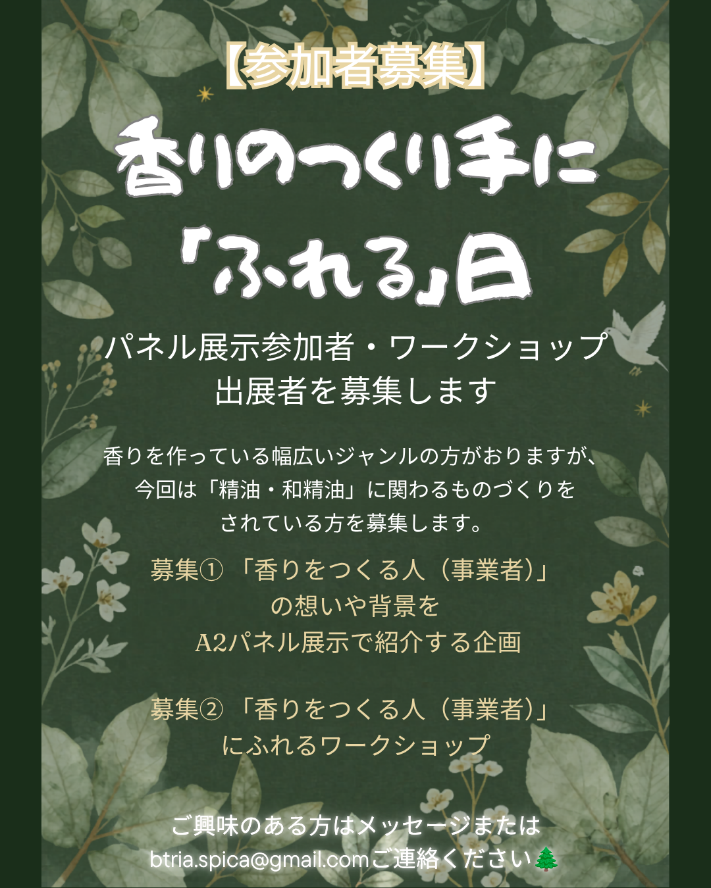
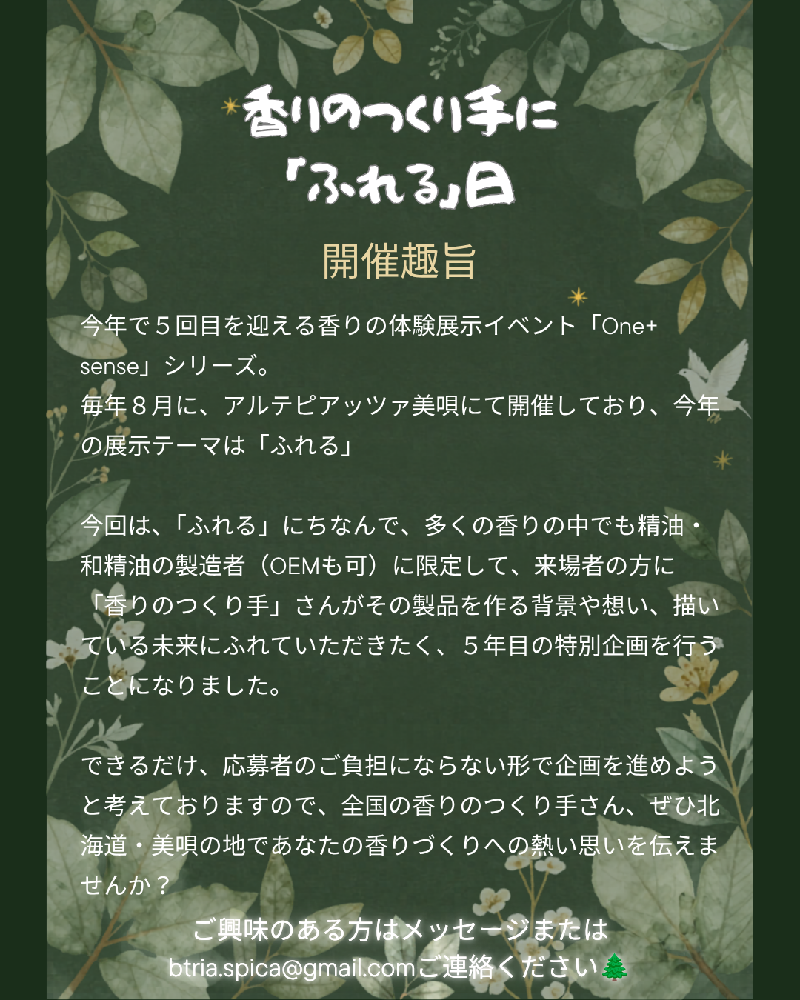
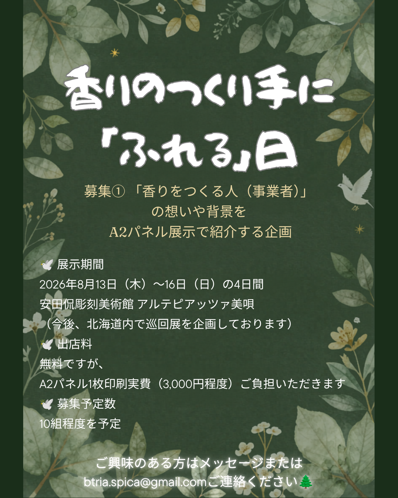
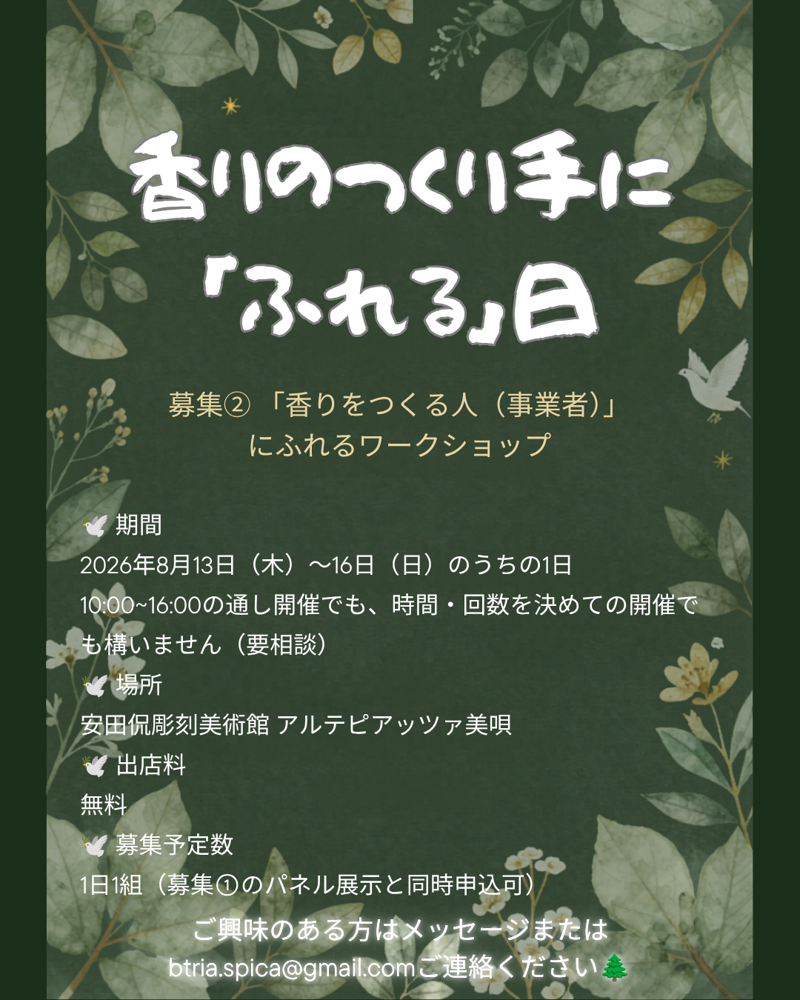
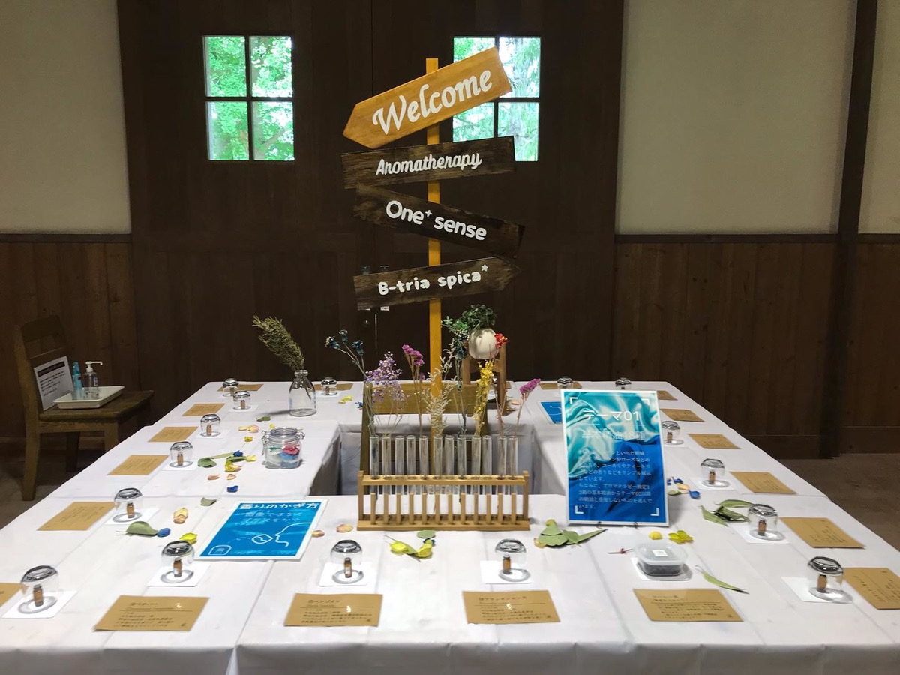
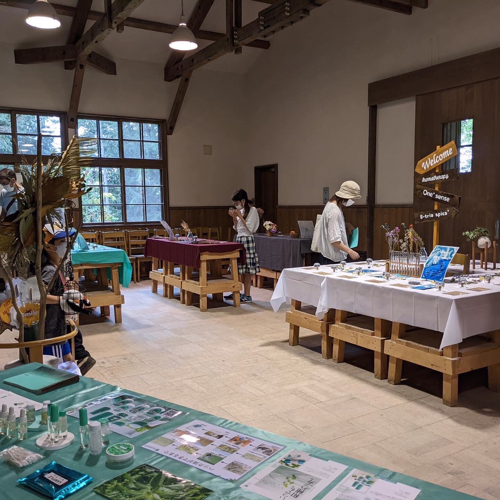
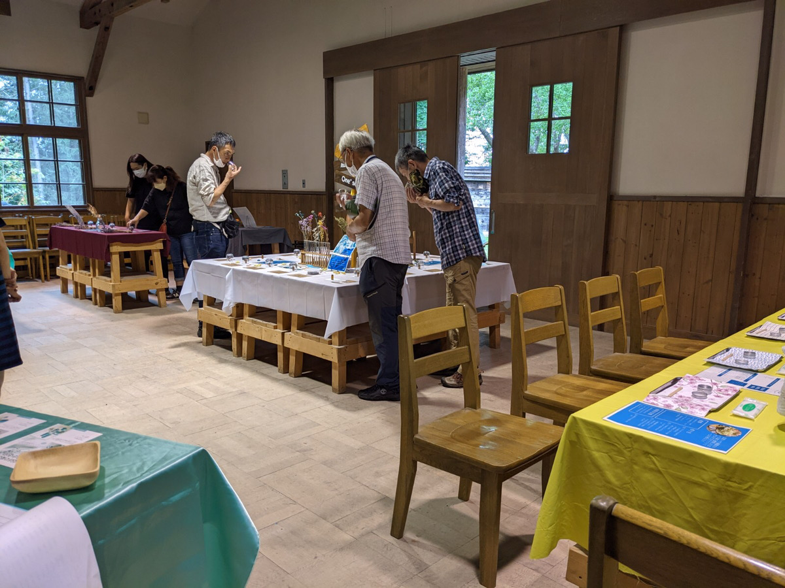
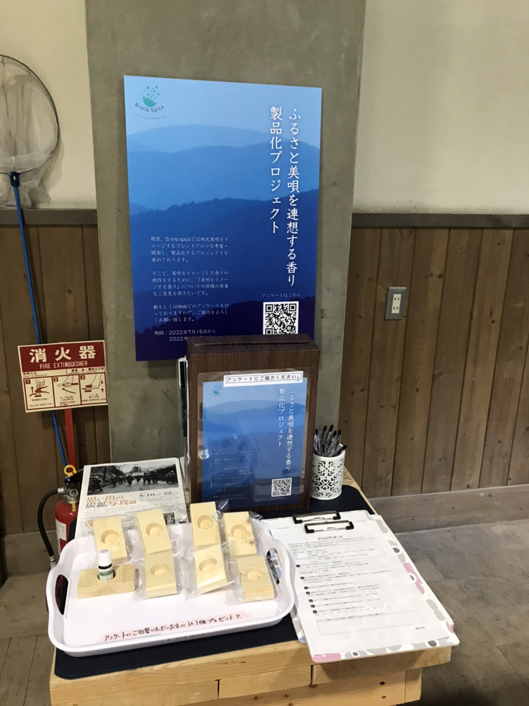

One+ sense とは?
One+ senseは、B-tria Spica（ビートリアスピカ）が2022年より毎年開催している、
香りをテーマにした体験型展示イベントです。
人が香りを感じるのは五感のひとつである「嗅覚[One sense]」ですが、
香りは嗅覚だけで感じるものではありません。
視覚、聴覚、触覚、味覚、そして人の記憶や感情。
さまざまな感覚[＋]を組み合わせることで、香りの新しい表現や体験ができるのではないか。
そんな想いから、「One+ sense」という名前を付けました。
「都会へ行かなくても、香りにふれられる場を。」
その想いを原点に、地元・美唄市で展示を続けています。
会場となるアルテピアッツァ美唄は、幼い頃から親しんできた場所であり、
創作活動の原点でもあります。
今年のテーマは「ふれる」。
人は、見えないものに不安を感じる一方で、触れることで想像しようとします。
手で触れる
情報に触れる
心の琴線に触れる
そして、完成品の向こう側にある物語に触れる。
One+ senseには正解はありません。
感じ方も、受け取り方も、人それぞれです。
答えは、いつも自分の中にあります。
「1人が動けば、世界は変わる」
展示は会場に並ぶ作品だけで完成するものではありません。
テーマを考え、企画を立て、香りをつくり、人と出会い、少しずつ積み重ねた時間があって、初めて展示になります。
今年は、その展示ができるまでの過程も作品の一部として記録しています。
小さな動きが、誰かの気づきにつながることを願って。
B-tria Spicaについて
北海道美唄市を拠点に活動する、セルフブランディングによるクリエイティブプロジェクト。
「香り」をきっかけに、地域資源や植物の可能性、
そして完成品の向こう側にある物語を表現し、伝える活動を行っています。
現在は、香りの展示イベント「One+ sense」の企画・運営をはじめ、ワークショップの開催、オリジナルブレンド精油の開発、デザイン制作など、幅広く活動しています。
プロジェクトを主宰する「中の人」は北海道美唄市出身、在住。
大学では数学教育・理科教育・科学教育を学ぶ。
元教員で「理系の知見を持つアロマのプロ」として、
香りを通じたワークショップ、体験づくり、展示活動を行っています。
地域資源や植物の可能性を伝え、
「完成品の向こう側にある物語」にふれる機会をつくることを大切にしています。
- 日本アロマ環境協会（AEAJ）認定アロマテラピーインストラクター
- 日本アロマ環境協会（AEAJ）認定アロマブレンドデザイナー
- @aromaアロマ空間アドバイザー認定
- 一般社団法人和ハーブ協会認定 和ハーブ・ライフアドバイザー
- JCAキャンドルクラフトコース修了、アーティストコース履修中
開催概要
イベント名：One+ sense 2026「ふれる」
日程：2026年8月13日(木)～16日(日)
時間：10:00 – 17:00（最終日のみ16:00まで）
会場：安田侃彫刻美術館 アルテピアッツァ美唄 ストゥディオアルテ
入場料：無料（ワークショップのみ有料）
特別企画「香りのつくり手にふれる日」
One+ sense 5回目記念特別企画として、精油・和精油のつくり手に焦点を当て、製品の背景にある物語を直接届ける企画です。
現在、出展希望者を募集しております。
なお、パネル展示・ワークショップの出展者は、決まり次第、順次お知らせいたします。
特別企画出展者・募集要項
▶ 募集要項の詳細を見る




過去4回の展示




よくあるご質問
▼ Q. 駐車場はありますか？
展示にお越しの方は、カフェアルテ側(25台)の駐車場をご利用ください。
なお、アートスペース（旧体育館）側にも駐車場がございます。
▼ Q. ペットの同伴は可能ですか？
施設の屋外エリアのみ同伴可能で、展示会場内は同伴不可です。屋外ではリードの着用をお願いいたします。
▼ Q. ワークショップ及び物販の支払い方法は？
ワークショップは現金のみとなっております。一部の物販はPayPayのみご使用可能です。
アクセス
〒072-0831 北海道美唄市落合町栄町
道央自動車道 美唄IC下車、右折後、道道美唄富良野線を1.7km（約5分）
美唄駅から市民バス東線「アルテピアッツァ美唄」行き乗車。
(東明通り経由32分、旭通り経由19分)
※展示会場の最寄りのバス停「東明橋」で下車ください。
SNS・関連リンク
展示ができるまでの日誌を公開中
Instagram を見る最新情報・過去の活動はこちら
公式サイトへ